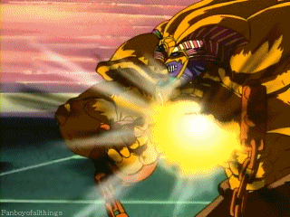

어둠의 유우기가 카이바 세토와 벌인 푸른 눈의 백룡전 제2차 전(원작 39화/토에이판 24화), 1화(DM)에서 첫 등장. 유우기는 카이바 세토가 푸른 눈의 백룡을 2마리나 소환하자 빛의 봉인검으로 잠시 공격을 저지하였지만 그 이상의 수단은 없었고 패에는 '의미★불명의 카드'만 세 장이라 승부를 거의 포기하였으나, '의미가 없는 카드는 없다'는 할아버지의 말씀을 기억해낸 뒤 그 세 장이 바로 매직 & 위저드에서 단 하나, 다섯 장의 카드를 모아야 소환되는 전설의 엑조디아라는 걸 깨닫는다. 그리고 빛의 봉인검으로 번 3턴 동안 엑조디아 파츠를 모두 뽑아낸다. 다섯 파츠가 모두 완성되는 순간 나타난 엑조디아는 공격력과 수비력이 무한대/무한대였다. 그리고 이 시점 매직 & 위저드 최고의 공격력을 지녔다던 3마리의 푸른 눈의 백룡을 일격에 날려버리며 그 위력을 과시했다. 기술명은 분노의 업화, 엑조드 플레임, 분노의 업화, 엑조디아 플레임(토에이판) 더빙판에서는 분노의 불꽃, 엑조드 파이어 .
